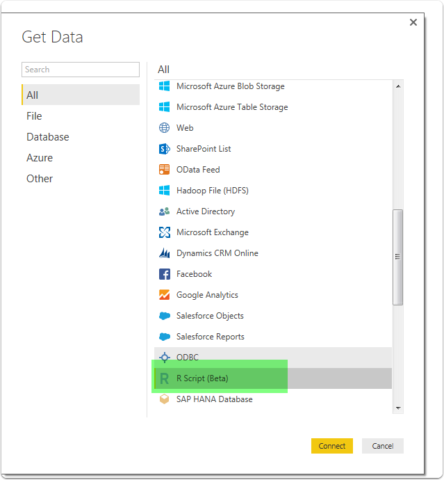
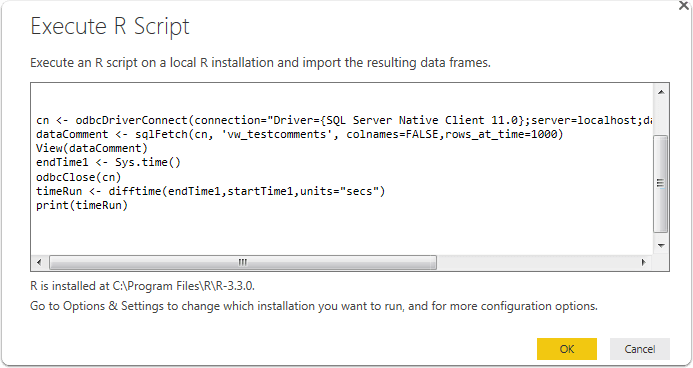
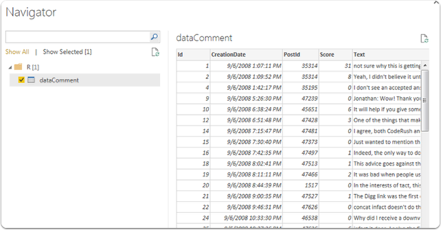
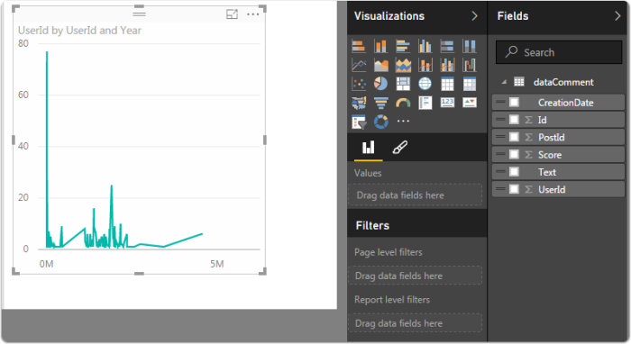

The Mysterious Black Box of R - For the SQL Server Guy
Took a class from Jamey Johnston @ SQLSaturday #516 in Houston. Lots of great information covered. Follow him for a much more detailed perspective on R. Jamey Johnston on Twitter @StatCowboy. Did a basic walkthrough of running an R query, and figured I'd share it as it had been a mysterious black box before this. Thanks to Jamey for inspiring me to look at the mysterious magic that is R....
Setup to Run Query
Simple-Talk: Making Data Analytics Simpler SQL Server and R This provided the core code I needed to start the process with R, recommend reading the walkthrough for details. To get started in connecting in RStudio to SQL Server run this command in the RStudio console.
Verify the library is installed by running from the consoleRunning Select from View
This was run against StackOverflow database
library(RODBC)
startTime1
<- Sys.time() cn <- odbcDriverConnect(connection="Driver={SQL Server Native Client 11.0};server=localhost;database=StackOverflow;trusted_connection=yes;") dataComment <- sqlFetch(cn, 'vw_testcomments', colnames=FALSE,rows_at_time=1000) View(dataComment) endTime1 <- Sys.time() odbcClose(cn) timeRun <- difftime(endTime1,startTime1,units="secs") print(timeRun)
I created a simple view to select from the large 15GB comments table with top(1000)
USE [StackOverflow]
GO
SET ANSI_NULLS ON
GO
SET QUOTED_IDENTIFIER ON
GO
CREATE view [dbo].[vw_testcomments] as
select top(10000) * from dbo.Comments as C
GO

viewing the results of basic query in r studio

running R script in PowerBi

execute r script

results preview

Visualized in Power Bi



 .
Here is the snippet that sets the new default.
.
Here is the snippet that sets the new default.


 A post in technet mentioned that the DLL shipped with SP3 could cause these conflicts and if the uninstall didn't clean up the GAC correctly, problems could occur with Entity Framework calls.
A post in technet mentioned that the DLL shipped with SP3 could cause these conflicts and if the uninstall didn't clean up the GAC correctly, problems could occur with Entity Framework calls.